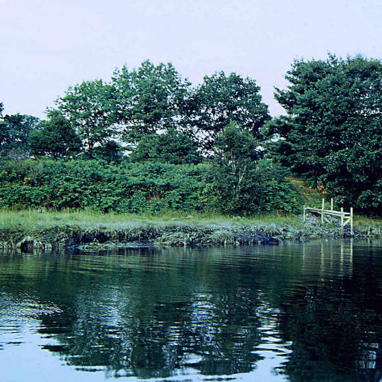
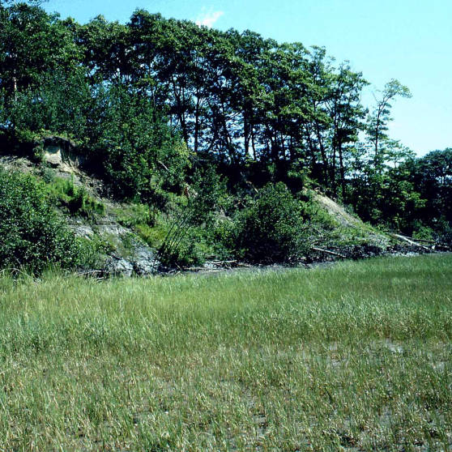
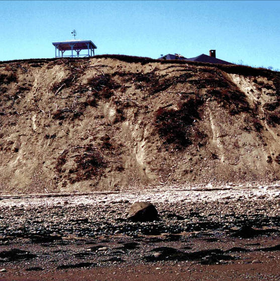
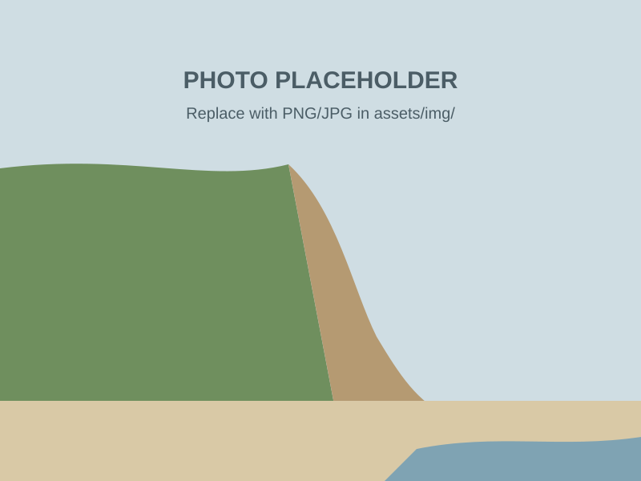

Maine Geological Survey · 2026 data update
Coastal Bluff layer update
New maps rate every coastal bluff in Maine. Here's what they show, and how to read them.
01 By the numbers
A bluff is a steep shoreline slope of loose sediment, at least 3 feet high, just above high tide.
1,689miles of coastal bluff mapped
579miles unstable or highly unstable
77miles highly unstable
Use this data to
- See where bluffs are
- Guide local planning
- Flag sites for a closer look
- Build coastal resilience
A planning tool for broad areas. Not a site-specific assessment.
02 Bluffs 101
Erosion is natural. It becomes a hazard when something we value sits at the edge.
- Slope. Steeper faces fail more easily.
- Shape. Height and profile change how a bluff responds.
- Vegetation. Roots hold sediment. Bare faces erode faster.
- Shoreline. Ledge, marsh or beach at the base absorb waves.
- Water. Runoff and groundwater weaken bluffs from above and within.
- Sea-level rise. Higher water undercuts the toe more often.
- No single cause. It's how these factors combine. That's what the rating measures.
Different Bluff Ratings

Stable
Unstable
Highly unstable03 How bluffs are rated
Each 2026 segment gets a stability score: points for what geologists see, plus terrain from lidar.
- Visible signs6 factors from aerial photos & field visits · 0–6 pts each
- Terrainaspect, height, slope from NOAA lidar · counted only if signs are visible
- Rating0–9 Stable · 10–29 Unstable · 30+ Highly unstable
Try to score a bluff
Stability score
0
Also new in 2026
Sediment value
How much a bluff feeds nearby beaches, flats and marshes.
- Erosion signs0–6 each
- Sediment moving offshore0–12
- Beach, flat or marsh below+3
- Dune · fringing marsh · shellfish / worm flats+6 each
NoneLowMediumHigh
Also new in 2026
Habitat count
Special habitats within 328 ft of the bluff.
- Sand dunes
- Seagrass
- Shellfish beds
- Marine worm beds
- Waterfowl & wading birds
- Shorebird areas
- Essential habitat
- Rare species
- Fringing marsh
Method: MGS Coastal Bluffs digital data. Terrain counts in full when visible signs total more than 8, half for 5–8, and not at all below 5.
04 The 2026 map
Scroll to tour the map, then click any bluff to see its score.
Interactive map. Use the plus and minus buttons to zoom, arrow keys to pan. The text steps describe each view.
- Every line is a stretch of bluff. 1,689 miles in all.
- 77 miles are highly unstable.
- Whiting Bay has the most: 9.3 miles.
- How each bluff segment is scored. Click any line to see how it scored.
05 High risk
MGS classifies the shore twice: what's at the water's edge, and how stable the bluff face is above it.
| Bluff face ↓Shoreline → | Ledgebedrock outcrop | Armoredseawall, riprap | Salt marshvegetated marsh | Beach / flatsand, mud, cobble |
|---|---|---|---|---|
| Highly unstablenear-vertical, bare, fallen trees | ||||
| Unstableshrubby, bare spots, tilting trees | ||||
| Stablegentle, fully vegetated | ||||
| No bluffunder 3 ft of sediment |
Classification from the MGS Coastal Bluffs map explanation (PDF). Some shores have more than one type.
Face vs. landslide
Bluff face
Surface erosion. Gradual, episodic.
This map
Landslide
Deep failure. Sudden, large. Likely with high steep faces, clay, toe erosion and high groundwater.
Separate MGS map
- 150 ft segments, averaged
- Boat & air surveys + lidar
- 1996 Rockland Harbor slide, on a bluff rated only "unstable"
For a specific site, consult a licensed geologist or geotechnical engineer.
06 Land use
What happens at the top matters as much as the waves at the bottom.
Interactive map. The text steps describe each view.
- Blue marks bluffs where water is seeping out or running over the face.
- Orrs Island has the most: 16 miles.
- Redirect roof & driveway runoff away from the edge
- Plant native, deep-rooted cover
- Set back structures and clearing
OUR SHORE plant guide (PDF) · Cumberland County guide (coming)
07 Case studies
-

[Town]
[Case one]
[One-line outcome]
-
[Town]
[Case two]
[One-line outcome]
-
[Town]
[Case three]
[One-line outcome]
08 Learn more
Draft: project components.